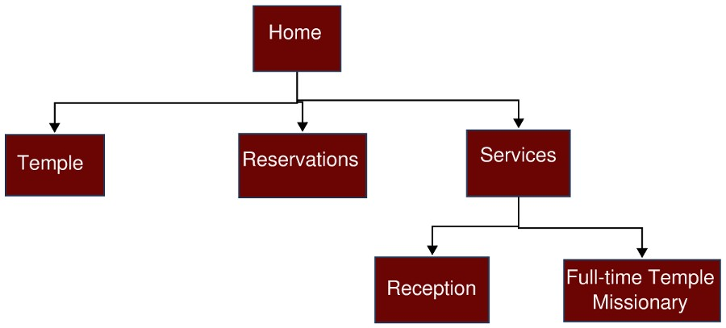

Target Audience
Site Purpose
The purpose of this site is to help temple workers, patrons, and families that go to The Church of Jesus Christ of Latter-Day Saints temples around the world know where they can stay. This site will also provide the terms and policies that Temple Inn & Suites expects everyone to follow as well as information on the amenities and special services the hotel offers. The overall goal of the website is to promote and provide information about the specialized services that Temple Inn & Suites offers to meet the needs of temple patrons who come to serve in the temple or who participate in events such as sealings, weddings, receptions, and youth trips. They will have an opportunity to look up temple information on the temples of their choosing and will be able to book a reservation from their stay.
Site Map
Domain Name
templeinnandsuites.com